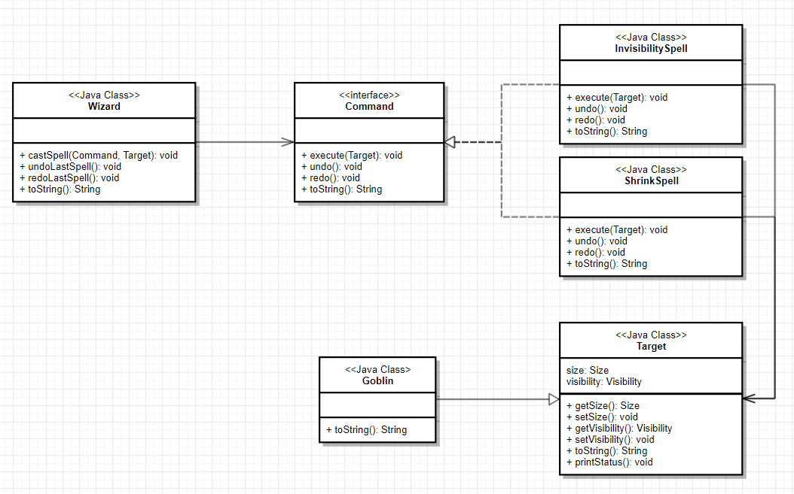

本文的设计模式来源于github上人气比较高的iluwatar/java-design-patterns，包含了23种经典设计模式和很多实际应用中涉及到的模式。
文中涉及到的示例代码可能只抽取了部分进行讲解，如果有本地模拟需求，请参考源码。
“设计模式是程序员在设计应用程序时能够解决场景问题的最佳实现，通过经测试和验证的开发范例，可以提高开发效率。重用设计模式，可有效避免可能因细微问题而导致的重大隐患，同时有助于提升熟悉设计模式的编码人员和架构师对代码的可读性。”
作用
命令模式将请求封装成对象，命令(Command，也被称作Action或Transaction)被抽象成一个对象，通过这个对象的方法调用，从而间接操作实体对象（Target），一个Command通常可支持指定操作、队列、日志记录等，并支持可撤销操作。
适用性
- 通过要执行的动作来操作对象，可以应用到回调函数中；
- Command对象可以有一个独立于原始请求的生命周期，如果一个请求的处理可以通过独立的地址空间完成，那么就可以将这个请求转移到Command对象中去处理。
- 支持撤销，并且能记录撤销操作的执行过程和状态。一个合理的Command对象需要添加必要的undo()操作，用于撤销execute()操作，同时已执行的命令存储在历史列表中。
- 支持日志记录更改，可保证系统异常时，可通过重新执行日志的记录来恢复数据。
- 通过命令模式，可以对事务处理进行建模，实现事务的统一管理。
典型用例
- 记录历史请求
- 回调功能
- 撤销功能
代码示例
抽象命令对象
Command模式中，所有的命令实现类都继承一个抽象命令对象，该对象具备以下基本方法：
1 | public abstract class Command { |
抽象目标对象
execute参数为需要操作的目标对象。本文我们以网游中的“会加Buff的巫师”为例：巫师可以对召唤兽施加Buff，用于控制召唤兽“收缩效果”和“隐形效果”。这里的目标对象就是召唤兽：
1 | public abstract class Target { |
命令实现类
游戏中有两种法术，一种能施加收缩效果，一种能施加隐形效果：
1 | // 收缩术——继承Command抽象命令对象 |
目标实现类
定义一种召唤兽
1 | public class Goblin extends Target { |
命令执行
定义命令下达者——“巫师”1
2
3
4
5
6
7
8
9
10
11
12
13
14
15
16
17
18
19
20
21
22
23
24
25
26
27
28
29
30
31public class Wizard {
// 可撤销的命令队列
private Deque<Command> undoStack = new LinkedList<>();
// 可重新执行的命令队列
private Deque<Command> redoStack = new LinkedList<>();
public Wizard() {}
// 对目标target执行command法术，undoStack+1
public void castSpell(Command command, Target target) {
LOGGER.info("{} casts {} at {}", this, command, target);
command.execute(target);
undoStack.offerLast(command);
}
// 撤销上一个法术，redoStack+1
public void undoLastSpell() {
if (!undoStack.isEmpty()) {
Command previousSpell = undoStack.pollLast();
redoStack.offerLast(previousSpell);
LOGGER.info("{} undoes {}", this, previousSpell);
previousSpell.undo();
}
}
// 重新释放被撤销的法术，undoStack+1
public void redoLastSpell() {
if (!redoStack.isEmpty()) {
Command previousSpell = redoStack.pollLast();
undoStack.offerLast(previousSpell);
LOGGER.info("{} redoes {}", this, previousSpell);
previousSpell.redo();
}
}
}
“巫师”(客户端)对“哥布林”(目标对象)施展“法术”(命令对象)：
1 | public static void main(String[] args) { |
类图
